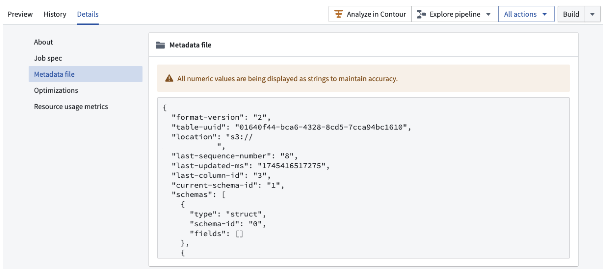

Apache Iceberg â is a widely adopted open-source specification and table format, available in Foundry as an alternative resource type for representing tabular data. This section explains what Iceberg tables are, how Foundry implements them, and how to build with them.
Apache Iceberg provides an open table format that has gained significant traction in the data and analytics community, due to benefits around scalability, performance, and broad ecosystem support. In particular, the wide adoption of the Iceberg format and catalog specifications enables a broad array of integrations and interoperability across modern data ecosystems.
The Apache Iceberg project includes the Apache Iceberg specification â, as well as an ecosystem of engine connectors that support the Iceberg specification, such as Spark â and Flink â.
Beyond the core project, a growing ecosystem of connectors and engines supports the format. PyIceberg â provides a gateway into the Python ecosystem, and engines like Trino â and PrestoDB â offer native support. Third-party platforms such as Databricks â and Snowflake â provide offerings built on top of it.
Apache Iceberg defines an Iceberg REST Catalog â specification, which outlines a set of endpoints and behaviors that a service must implement to function as an Iceberg REST catalog. By adhering to this specification, the service becomes compatible with a growing number of compute engines that support the Iceberg REST Catalog.
Foundry natively implements this Iceberg REST Catalog specification, which enables third parties to integrate with Foundry's Iceberg catalog to read and write Foundry Iceberg tables. Foundry also supports connectivity to third-party Iceberg REST catalogs such as Databricks Unity Catalog â. See Virtual tables: Iceberg catalogs for supported third-party catalogs.
Foundry exposes Iceberg catalog metadata explicitly as a JSON file in the dataset application under the Details tab, as shown in the screenshot below:

Foundry offers Iceberg in two forms:
Learn more about Iceberg storage options.
Iceberg tables offer a number of unique benefits, including:
DELETE, UPDATE, and MERGE INTO operationsNot all Foundry dataset functionality is currently supported with Iceberg tables. See Iceberg tables vs. Foundry datasets for more detail on Iceberg support in Foundry and the differences versus catalog datasets.
Configure storage and encryption. Before creating Iceberg tables, an administrator establishes where table data is stored and how it is encrypted. Start with the storage architecture overview to choose between Foundry-managed storage and bring-your-own-bucket, then configure Iceberg settings in Control Panel to enable Iceberg and set enrollment-wide defaults or per-project overrides. If you are supplying your own bucket, follow the bring-your-own-bucket setup guide.
Build pipelines. Foundry's transforms-tables library reads and writes Iceberg tables from Python transforms. The Python transforms page provides an introduction to writing transforms with Iceberg. To process only what changed between runs rather than rewriting a table each build, consider using changelogs and CDC. You can also read and write Iceberg tables using Foundry's Pipeline Builder application.
Ingest and maintain data. You can sync data into Iceberg tables directly from external systems with Data Connection syncs. Over time, tables may accumulate small files or a larger number of historical snapshots. You can schedule maintenance tasks such as compaction, snapshot expiration, and orphan file cleanup to optimize your tables.
Understand catalog behavior. Foundry extends standard Iceberg with certain notable Foundry catalog features. Transactions explains Foundry's all-or-nothing update semantics and maps Iceberg snapshot types to Foundry transaction types. Branching covers how Foundry builds provide branch isolation for schema, sort order, and partition-spec changes. Properties documents Foundry-specific table properties and defaults.
Connect external clients. Because Foundry implements the Iceberg REST Catalog specification, engines outside Foundry can query your tables. Any external client needs two things: authentication using either an API token or OAuth2, and network access to both the REST catalog endpoint and the underlying storage bucket. For worked examples, see connecting a local Jupyter® notebook and connecting Foundry's Iceberg catalog to Snowflake.